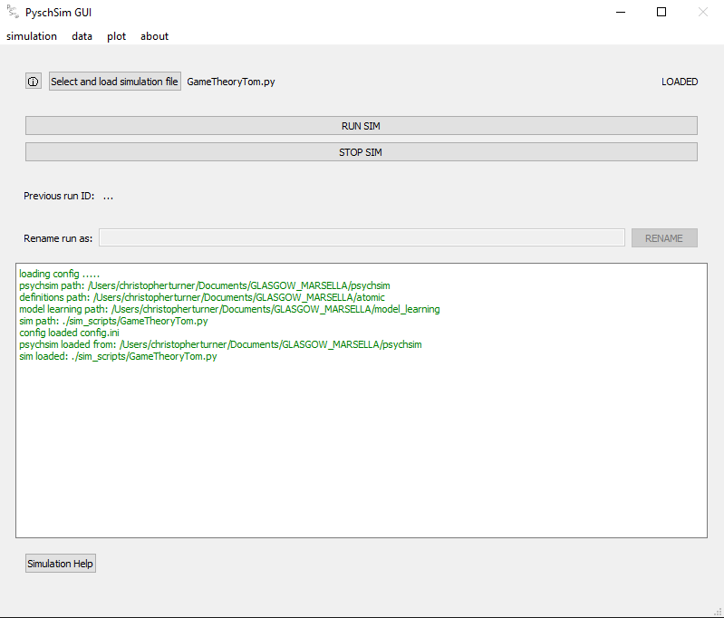

USING THE GUI¶
Demo using psychsim search and rescue simulation¶
TODO: *****************ADD LIST OF VIDEOS HERE INSTEAD OF TEXT BASED TUTORIAL*********************
This tutorial steps through the different functions of the GUI.
Set paths and run the sim
When we start up the GUI we are met with the following screen

The PsychSim directory and Simulation model directory were automatically set by the config.ini. However, if these are wrong, we can navigate to the correct directories with the supplied buttons.
We are happy with the paths to psychsim, the model. Now make sure ‘GuiTestSim.py is set as the simulation (you can find it in the sim_scripts directory)
Click on the Load Simulation button. Great! everything is working as planned and you the sim is LOADED as per the following screen:

The ‘load simulation’ button MUST be pressed before running a simulation.
Now we’re ready to run! Click the RUN SIM button and watch as your sim progresses through the steps (there are 50 in this simulation).
You can also see that the GUI has automatically given your run data a timestamp as a name (in this case 20200610_215941)

20200610_215941 is a bit boring, so go ahead and rename your data to something more informative like myFirstSimData

Just for fun, let’s run the simulation again so we can have more than one dataset. Only this time, let’s stop it before it ends by clicking the STOP (it does take a while to finish).

Saving and renaming the data
We are worried that we won’t get time to finish this tutorial immediately, so we want to save the data. Click on the data>view table of stored data menu item to view the data we have

From here, you can save the data to any directory you like. Data is saved as a .pickle file and can be reloaded at any time through this screen. If you are also unhappy with the names you gave your data, you can rename them here.
We’re happy so we’ll leave everything as it is. Close that window.
Querying the data
We’re now ready to extract some information from our data. Click on the data>create query from data menu item. Since myFirstSimData had 50 runs, let’s look at that data. It should be automatically selected as the first item in the Select Data/Sample dropdown.

We’re interested in the beliefs of this agent so select get_individual_agents_beliefs from the select function to query data dropdown
You’ll notice that the agent parameter dropdown became active. Since there is only one agent in our data, just select ‘TriageAg1’
click Execute function to get the beliefs of TriageAg1

You will notice that the name of the query results has been automatically filled with something informative (get_individual_agent_beliefs_myFirstSimData_20200610_222657). feel free to rename it with something easier for you to remember.
We’re not finished with the queries yet. We also want to know what actions this agent took. Select get_actions and TriageAg1 as the agent parameter.

It seems that the agent found and triaged two victims (victim3 and then victim1). We want to know the reasoning behind triaging these two victims.
Select query_action as the function, TriageAg1 as the agent, and TriageAg1-triage-victim3 as the action.

Repeat the same, only now select TriageAg1-triage-victim1 as the action.

Viewing query results
We have now created a few queries and want to look back at some of our results. Click on the View saved queries tab, select your first query and view query data.
This brings up the same view we saw when we originally created the query. If you decided you don’t like the name anymore, go ahead and change it.
If you realised that you made too many queries that weren’t useful, you can delete the currently selected one with the Delete Selected Query button. If you want to preserve the query results, or analyise them with an external tool, you can save the results to file with Save query results as CSV. This will save the csv to the sim_output directory (sorry, at the moment you can’t change where it goes)
Comparing query results.
One interesting thing to know is what the difference was between the decisions the agent made to triage the two victims. Go to the Compare Saved query results tab to do this.
Make sure both the query_action results are selected and click DIFF

We can now see the planning for both actions side by side and can see that in fact everything is different. This is to be expected as they were different stages of the same actor’s journey.
This tool can also be used for comparing different actors from different simulations.
Sampling
We’re almost ready to plot the data. Specifically, we’ll plot some data from the agent’s beliefs. But before we do that, we want to trim our data a little by making some samples.
Go to the Create sample from query tab and select the query with individual_agent_beliefs.
The agent triages the two victims in the first half of the data, then moves back and forth. So let’s cut out the second half.
Note: you need to explicitly select the data for the variable list to be populated
Select step for the variable to sample, and range as the sample function then select sample

you will see that you can select steps with a range from 0 to 49 (our 50 steps). Select 0 as min and 25 as the max and OK.
This has saved a new query with _step_range_0.0-25.0 appended to the name. You can view this, rename, and save as before from the view query data tab.
Plotting
We are now ready to plot our sampled data.
Go to the plot>plot query results screen from the main menu items.

Click on create new plot to open a blank plot window.

Select the sampled query (the one we just created for 0-25 steps) as the query. Select Step for the x-axis and TriageAg1’s victim in crosshair for the y-axis.
*due to the nature of the simulation the plots may end up being slightly different*
There is only one agent so nothing to really group by, or apply stats over for this plot. So we will leave these options blank.
Click add to plot to get the following plot:

Don’t worry if you make a mistake. You can click undo add to step backwards through the plots you add, or just clear to start from scratch.
you can give the plot a name and come back to it later by clicking save and close.
Double click on the plot in the list to bring it back up

Demonstrating more functionality with generic simulation¶
Unfortunately, the search and rescue sim doesn’t yet give a rich enough data to demonstrate all of the functionality. This will be demonstrated with the use of a generic sim (*sim_scripts/GenericSim.py).
This simulation creates three channels of sin waves. Channel 1 has added noise.
Load and run the new sim.
Go back to the simulation>view simulation info page and select this as the sim file. Don’t forget to load it!! then click RUN SIM.

Do this twice so we have two sets of data run generated by the generic sim (generic_output and generic_output2 in the table).

Querying the data
make your way back to the Create New Query tab through the data>create query from data dropdown menu.
Select the generic_output data in the Select Data/Sample dropdown.
Now, as this simulation does not have agent data, the only function that will really work is the get_generic_data function. Execute this (there should be no params active as you do not need any).

Repeat for the second dataset we generated in step 1. (generic_output2).
Select these two queries that you just created (one for generic_output and one for generic_output2) on the compare saved query results tab and diff the data.

you can see that only channel 1 differs between the two queries. This is because channel 1 has noise so each time the simulation is run, it will generate different results. The other two channels are noiseless so they will be the same across runs.
Create a sample
We now want to only see the top half of one two of these sinusoid functions. Go to the Create sample from qurey tab and select one of the query results you just made for this generic data.
You should now have channel, x, y, step for the sample variables.
Select y as we want to sample only the positive y values and select range.
Select 0 as the minimum, and 3 as the maximum. This saves a new query that is a sample of the orignal.

We are also only interested in channel 1 (with the noise) and channel3 (channel 2 is too boring).
Select the newly created sample query, then select channel as the sample variable and category as the function.
You can now select which channels you want to include in the sample. Choose Channel1 and 3.

4. Plot We’re now ready to plot so head back to the plot screen and create a new plot window.
Select the last query you made (with both range and category sample).
We will plot x on the x-axis and y on the y-axis and plot a scatter plot.

It looks a bit messy and we can’t distinguish what functions are what so select channel as the group variable.

It’s still a bit messy but you can clearly make out the peaks of the noiseless sinusoid (channel 3).
Try a line plot to connect the dots.

Plot the original query (before sampling) to see all sin waves.

Let’s try add some statistics. The mean will plot the mean over the x-axis. So in this case it will be the mean of all three signals.

A violin plot with channel on the x-axis and no grouping will show the energy distributions of each of the channels